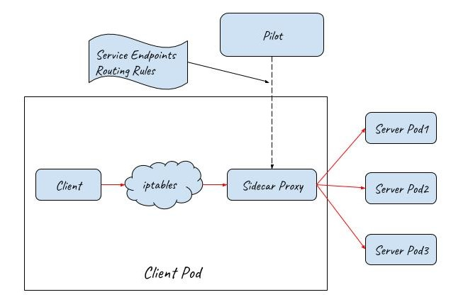

负载均衡的概念
负载均衡是将工作负载分布到多个服务器来提高网站、应用、数据库，来提高服务的性能和可靠性，是高可用网络基础架构的关键组件。
图1，负载均衡示意图
上图看到用户访问App时会先经过负载均衡（Load Balancer），再由负载均衡器将请求转发给后端服务器上的应用程序。
负载均衡主要分为两种：四层和七层负载均衡。
四层负载均衡
基于IP+端口的负载均衡，即在OSI第4层工作，就是通过发布三层的IP地址（VIP），然后加四层的端口号，来决定哪些流量需要做负载均衡，对需要处理的流量进行NAT处理，转发至后台服务器，并记录下这个TCP或者UDP的流量是由哪台服务器处理的，后续这个连接的所有流量都同样转发到同一台服务器处理。这种Load Balance不理解应用协议（如HTTP/FTP/MySQL等等）。
七层负载均衡
工作在OSI的最高层，第7层应用层，就是在四层的基础上，再考虑应用层的特征，比如同一个Web服务器的负载均衡，除了根据VIP加80端口辨别是否需要处理的流量，还可根据七层的URL、浏览器类别、语言来决定是否要进行负载均衡。举个例子，如果你的Web服务器分成两组，一组是中文语言的，一组是英文语言的，那么七层负载均衡就可以当用户来访问你的域名时，自动辨别用户语言，然后选择对应的语言服务器组进行负载均衡处理。
图2，四层和七层负载均衡的区别
四层负载均衡更像是路由器的工作方式，修改IP后转发即可；七层负载均衡需要获取到应用层信息，就需要与客户端建立连接并且解析应用层的内容，同时与服务端建立连接，将请求发送到对应的后端服务上。
K8S 负载均衡
现在的后端服务从物理机向容器的运行环境转移，之前物理机的负载均衡已经不适用基于Kubernetes的容器网络了，Kubernetes也需要支持更加灵活和特性广泛的负载均衡。
云环境下后端服务是运行在容器里的，容器是用Kubernetes通过Pod来编排和管理的，Pod是一组功能密切相关的容器的合集，提供一种服务。
K8S 的负载均衡主要分为两个层面： - 集群内部层面，包括资源分配、内部流量的访问 - 外部访问集群
调度层面
分配Pod到Node时就会考虑将一个Service的Pod打散分布，根据资源的容量和性能来部署Pod。作为调度过程的一部分，它需要充分考虑管理可用性，避免遇到资源瓶颈。达到整体运行良好的运行状况。
Service
我们知道 Pod 的生命周期是短暂的，会因为一些原因而被销毁而在别的 Node 重新创建，因此 Pod 的 IP 地址会变化，而其他服务无法知道新的 IP 地址，这就需要定义一个 Service 暴露给其他服务使用，一个 Service 可以有一个或多个 Pod 逻辑分组的抽象，这样前端应用程序向 Service IP 发起请求就可以了，而不需要关心具体的 Pod 的状态和 IP。Service IP 是固定不变的。
Service通过标签来选取服务后端，一般配合Replication Controller或者Deployment来保证后端容器的正常运行。
Service有三种类型：
- ClusterIP：默认类型，自动分配一个仅cluster内部可以访问的虚拟IP
- NodePort：在ClusterIP基础上为Service在每台机器上绑定一个端口，这样就可以通过
:NodePort来访问该服务 - LoadBalancer：在NodePort的基础上，借助cloud provider创建一个外部的负载均衡器，并将请求转发到
:NodePort
另外，也可以将已有的服务以Service的形式加入到Kubernetes集群中来，只需要在创建Service的时候不指定Label selector，而是在Service创建好后手动为其添加endpoint。
Service 通过 VIP 实现的是一个4层负载均衡的功能。
Service 定义
一个 Service 在 Kubernetes 中是一个 REST 对象，和 Pod 类似。 像所有的 REST 对象一样， Service 定义可以基于 POST 方式，请求 apiserver 创建新的实例。 例如，假定有一组 Pod，它们对外暴露了 9376 端口，同时还被打上 “app=MyApp” 标签。
kind: Service
apiVersion: v1
metadata:
name: my-service
spec:
selector:
app: MyApp
ports:
- protocol: TCP
port: 80
targetPort: 9376
上述配置将创建一个名称为 “my-service” 的 Service 对象，它会将请求代理到使用 TCP 端口 9376，并且具有标签 “app=MyApp” 的 Pod 上。 这个 Service 将被指派一个 IP 地址（通常称为 “Cluster IP”），它会被服务的代理使用（见下面）。 该 Service 的 selector 将会持续评估，处理结果将被 POST 到一个名称为 “my-service” 的 Endpoints 对象上。
需要注意的是， Service 能够将一个接收端口映射到任意的 targetPort。 默认情况下，targetPort 将被设置为与 port 字段相同的值。 可能更有趣的是，targetPort 可以是一个字符串，引用了 backend Pod 的一个端口的名称。 但是，实际指派给该端口名称的端口号，在每个 backend Pod 中可能并不相同。 对于部署和设计 Service ，这种方式会提供更大的灵活性。 例如，可以在 backend 软件下一个版本中，修改 Pod 暴露的端口，并不会中断客户端的调用。
Kubernetes Service 能够支持 TCP 和 UDP 协议，默认 TCP 协议。
kube-proxy
Kubernetes中通过Node上的kube-proxy实现负载分配，只能提供本地 Node 上 Pod 的分担，kube-proxy 负责为 Service 实现了一种 VIP（虚拟 IP）的形式。主要有三种实现方式：
- userspace，最开始的实现方式
- iptables，目前的默认方式
- ipvs，
userspace 代理模式
该模式下kube-proxy会为每一个Service创建一个监听端口。发向Cluster IP的请求被Iptables规则重定向到Kube-proxy监听的端口上，Kube-proxy根据LB算法选择一个提供服务的Pod并和其建立链接，以将请求转发到Pod上。
该模式下，Kube-proxy充当了一个四层Load balancer的角色。由于kube-proxy运行在userspace中，在进行转发处理时会增加两次内核和用户空间之间的数据拷贝，效率较另外两种模式低一些；好处是当后端的Pod不可用时，kube-proxy可以重试其他Pod。
默认的策略是，通过 round-robin 算法来选择 backend Pod。 实现基于客户端 IP 的会话亲和性，可以通过设置 service.spec.sessionAffinity 的值为 “ClientIP” （默认值为 “None”）。
图片 - userspace代理模式下Service概览图
作为一个例子，考虑前面提到的图片处理应用程序。 当创建 backend Service 时，Kubernetes master 会给它指派一个虚拟 IP 地址，比如 10.0.0.1。 假设 Service 的端口是 1234，该 Service 会被集群中所有的 kube-proxy 实例观察到。 当代理看到一个新的 Service， 它会打开一个新的端口，建立一个从该 VIP 重定向到新端口的 iptables，并开始接收请求连接。
当一个客户端连接到一个 VIP，iptables 规则开始起作用，它会重定向该数据包到 Service代理 的端口。 Service代理 选择一个 backend，并将客户端的流量代理到 backend 上。
这意味着 Service 的所有者能够选择任何他们想使用的端口，而不存在冲突的风险。 客户端可以简单地连接到一个 IP 和端口，而不需要知道实际访问了哪些 Pod。
iptables 代理模式
为了避免增加内核和用户空间的数据拷贝操作，提高转发效率，Kube-proxy提供了iptables模式。在该模式下，Kube-proxy为service后端的每个Pod创建对应的iptables规则，直接将发向Cluster IP的请求重定向到一个Pod IP。
该模式下Kube-proxy不承担四层代理的角色，只负责创建iptables规则。该模式的优点是较userspace模式效率更高，但不能提供灵活的LB策略，当后端Pod不可用时也无法进行重试。
图片 - iptables代理模式下Service概览图
再次考虑前面提到的图片处理应用程序。 当创建 backend Service 时，Kubernetes master 会给它指派一个虚拟 IP 地址，比如 10.0.0.1。 假设 Service 的端口是 1234，该 Service 会被集群中所有的 kube-proxy 实例观察到。 当代理看到一个新的 Service， 它会安装一系列的 iptables 规则，从 VIP 重定向到 per-Service 规则。 该 per-Service 规则连接到 per-Endpoint 规则，该 per-Endpoint 规则会重定向（目标 NAT）到 backend。
当一个客户端连接到一个 VIP，iptables 规则开始起作用。一个 backend 会被选择（或者根据会话亲和性，或者随机），数据包被重定向到这个 backend。 不像 userspace 代理，数据包从来不拷贝到用户空间，kube-proxy 不是必须为该 VIP 工作而运行，并且客户端 IP 是不可更改的。 当流量打到 Node 的端口上，或通过负载均衡器，会执行相同的基本流程，但是在那些案例中客户端 IP 是可以更改的。
ipvs 代理模式
该模式和iptables类似，但是需要内核支持 ipvs，kube-proxy监控Pod的变化并创建相应的ipvs rules。ipvs也是在kernel模式下通过netfilter实现的，但采用了hash table来存储规则，因此在规则较多的情况下，Ipvs相对iptables转发效率更高。除此以外，ipvs支持更多的LB算法，例如：
- rr：轮询调度
- lc：最小连接数
- dh：目标哈希
- sh：源哈希
- sed：最短期望延迟
- nq： 不排队调度
注意： ipvs模式假定在运行kube-proxy之前在节点上都已经安装了IPVS内核模块。当kube-proxy以ipvs代理模式启动时，kube-proxy将验证节点上是否安装了IPVS模块，如果未安装，则kube-proxy将回退到iptables代理模式。
图片 - ipvs代理模式下Service概览图
缺点
为 VIP 使用 userspace 代理，将只适合小型到中型规模的集群，不能够扩展到上千 Service 的大型集群。 查看 最初设计方案 获取更多细节。
使用 userspace 代理，隐藏了访问 Service 的数据包的源 IP 地址。 这使得一些类型的防火墙无法起作用。 iptables 代理不会隐藏 Kubernetes 集群内部的 IP 地址，但却要求客户端请求必须通过一个负载均衡器或 Node 端口。
todo: userspace会引起源 IP 的修改？为啥 iptables 代理需要配置 loadbalancer 或者 NodePort？
Type 字段支持嵌套功能 —— 每一层需要添加到上一层里面。 不会严格要求所有云提供商（例如，GCE 就没必要为了使一个 LoadBalancer 能工作而分配一个 NodePort，但是 AWS 需要 ），但当前 API 是强制要求的。
Ingress
Ingress 是从Kubernetes集群外部访问集群内部服务的入口，service 和 pod 仅可在集群内部网络中通过 IP 地址访问。所有到达边界路由器的流量或被丢弃或被转发到其他地方。从概念上讲，可能像下面这样：
internet
|
------------
[ Services ]
Ingress是授权入站连接到达集群服务的规则集合。
internet
|
[ Ingress ]
--|-----|--
[ Services ]
你可以给Ingress配置提供外部可访问的URL、负载均衡、SSL、基于名称的虚拟主机等。用户通过POST Ingress资源到API server的方式来请求ingress。 Ingress controller负责实现Ingress，通常使用负载平衡器，它还可以配置边界路由和其他前端，这有助于以HA方式处理流量。
Ingress Resource
最简化的Ingress配置：
1: apiVersion: extensions/v1beta1
2: kind: Ingress
3: metadata:
4: name: test-ingress
5: spec:
6: rules:
7: - http:
8: paths:
9: - path: /testpath
10: backend:
11: serviceName: test
12: servicePort: 80
如果你没有配置Ingress controller就将其POST到API server不会有任何用处
配置说明
1-4行：跟Kubernetes的其他配置一样，ingress的配置也需要apiVersion，kind和metadata字段。配置文件的详细说明请查看部署应用, 配置容器和 使用resources.
5-7行: Ingress spec 中包含配置一个loadbalancer或proxy server的所有信息。最重要的是，它包含了一个匹配所有入站请求的规则列表。目前ingress只支持http规则。
8-9行：每条http规则包含以下信息：一个host配置项（比如for.bar.com，在这个例子中默认是*），path列表（比如：/testpath），每个path都关联一个backend(比如test:80)。在loadbalancer将流量转发到backend之前，所有的入站请求都要先匹配host和path。
10-12行：正如 services doc中描述的那样，backend是一个service:port的组合。Ingress的流量被转发到它所匹配的backend。
全局参数：为了简单起见，Ingress示例中没有全局参数，请参阅资源完整定义的api参考。 在所有请求都不能跟spec中的path匹配的情况下，请求被发送到Ingress controller的默认后端，可以指定全局缺省backend。
Ingress controllers
为了使Ingress正常工作，集群中必须运行Ingress controller。 这与其他类型的控制器不同，其他类型的控制器通常作为kube-controller-manager二进制文件的一部分运行，在集群启动时自动启动。 你需要选择最适合自己集群的Ingress controller或者自己实现一个。
- kubernetes当前支持并维护GCE和nginx两种controller.
- F5（公司）支持并维护 F5 BIG-IP Controller for Kubernetes.
- Kong 同时支持并维护社区版与企业版的 Kong Ingress Controller for Kubernetes.
- Traefik 是功能齐全的 ingress controller(Let’s Encrypt, secrets, http2, websocket…), Containous 也对其提供商业支持。
- Istio 使用CRD Gateway来控制Ingress流量。
Ingress类型
单Service Ingress Kubernetes中已经存在一些概念可以暴露单个service（查看替代方案），但是你仍然可以通过Ingress来实现，通过指定一个没有rule的默认backend的方式。
ingress.yaml定义文件：
apiVersion: extensions/v1beta1
kind: Ingress
metadata:
name: test-ingress
spec:
backend:
serviceName: testsvc
servicePort: 80
使用kubectl create -f命令创建，然后查看ingress：
$ kubectl get ing
NAME RULE BACKEND ADDRESS
test-ingress - testsvc:80 107.178.254.228
107.178.254.228就是Ingress controller为了实现Ingress而分配的IP地址。RULE列表示所有发送给该IP的流量都被转发到了BACKEND所列的Kubernetes service上。
loadbalancer
如前面描述的那样，kubernetes pod中的IP只在集群网络内部可见，我们需要在边界设置一个东西，让它能够接收ingress的流量并将它们转发到正确的端点上。这个东西一般是高可用的loadbalancer。使用Ingress能够允许你将loadbalancer的个数降低到最少，例如，假如你想要创建这样的一个设置：
foo.bar.com -> 178.91.123.132 -> / foo s1:80
/ bar s2:80
你需要一个这样的ingress：
apiVersion: extensions/v1beta1
kind: Ingress
metadata:
name: test
spec:
rules:
- host: foo.bar.com
http:
paths:
- path: /foo
backend:
serviceName: s1
servicePort: 80
- path: /bar
backend:
serviceName: s2
servicePort: 80
使用kubectl create -f创建完ingress后：
$ kubectl get ing
NAME RULE BACKEND ADDRESS
test -
foo.bar.com
/foo s1:80
/bar s2:80
只要服务（s1，s2）存在，Ingress controller就会将提供一个满足该Ingress的特定loadbalancer实现。 这一步完成后，您将在Ingress的最后一列看到loadbalancer的地址。
基于名称的虚拟主机
Name-based的虚拟主机在同一个IP地址下拥有多个主机名。
foo.bar.com --| |-> foo.bar.com s1:80
| 178.91.123.132 |
bar.foo.com --| |-> bar.foo.com s2:80
下面这个ingress说明基于Host header的后端loadbalancer的路由请求：
apiVersion: extensions/v1beta1
kind: Ingress
metadata:
name: test
spec:
rules:
- host: foo.bar.com
http:
paths:
- backend:
serviceName: s1
servicePort: 80
- host: bar.foo.com
http:
paths:
- backend:
serviceName: s2
servicePort: 80
默认backend
一个没有rule的ingress，如前面章节中所示，所有流量都将发送到一个默认backend。你可以用该技巧通知loadbalancer如何找到你网站的404页面，通过制定一些列rule和一个默认backend的方式。如果请求header中的host不能跟ingress中的host匹配，并且/或请求的URL不能与任何一个path匹配，则流量将路由到你的默认backend。
Istio
Istio Sidecar Proxy
Cluster IP解决了服务之间相互访问的问题，但从上面Kube-proxy的三种模式可以看到，Cluster IP的方式只提供了服务发现和基本的LB功能。如果要为服务间的通信应用灵活的路由规则以及提供Metrics collection，distributed tracing等服务管控功能,就必须得依靠Istio提供的服务网格能力了。
在Kubernetes中部署Istio后，Istio通过iptables和Sidecar Proxy接管服务之间的通信，服务间的相互通信不再通过Kube-proxy，而是通过Istio的Sidecar Proxy进行。请求流程是这样的：Client发起的请求被iptables重定向到Sidecar Proxy，Sidecar Proxy根据从控制面获取的服务发现信息和路由规则，选择一个后端的Server Pod创建链接，代理并转发Client的请求。
Istio Sidecar Proxy和Kube-proxy的userspace模式的工作机制类似，都是通过在用户空间的一个代理来实现客户端请求的转发和后端多个Pod之间的负载均衡。两者的不同点是：Kube-Proxy工作在四层，而Sidecar Proxy则是一个七层代理，可以针对HTTP，GRPS等应用层的语义进行处理和转发，因此功能更为强大，可以配合控制面实现更为灵活的路由规则和服务管控功能。
 图片 - Istio Sidecar Proxy 流量转发模型
gRPC负载均衡
参考
grpc-load-balancing-on-kubernetes-without-tears
问题
Service 的 IP 地址如何配置？
通过 Service 的 spec.clusterIP 来指定集群的 IP
为何不使用 round-robin DNS 而使用 VIP？
- 长久以来，DNS 库都没能认真对待 DNS TTL、缓存域名查询结果
- 很多应用只查询一次 DNS 并缓存了结果，就算应用和库能够正确查询解析，每个客户端反复重解析造成的负载也是非常难以管理的
到 Service 的流量如何路由过来的？Service 分布在不同的 Node 上，在不同的 Node 上有相同的 cluster IP？